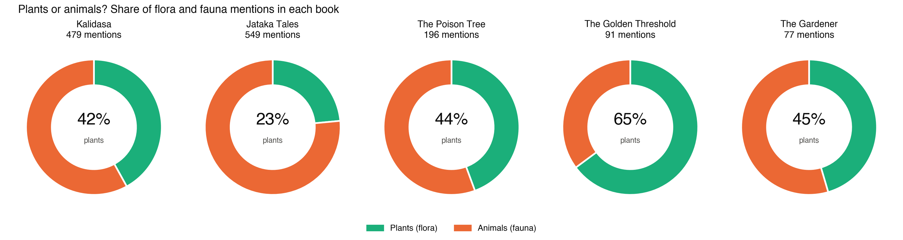
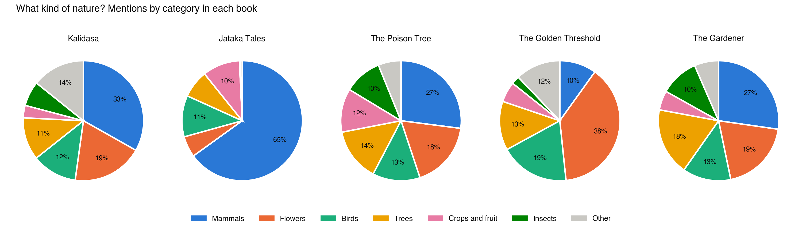
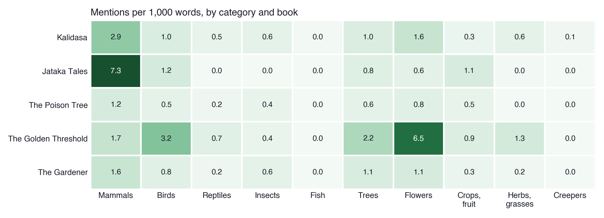
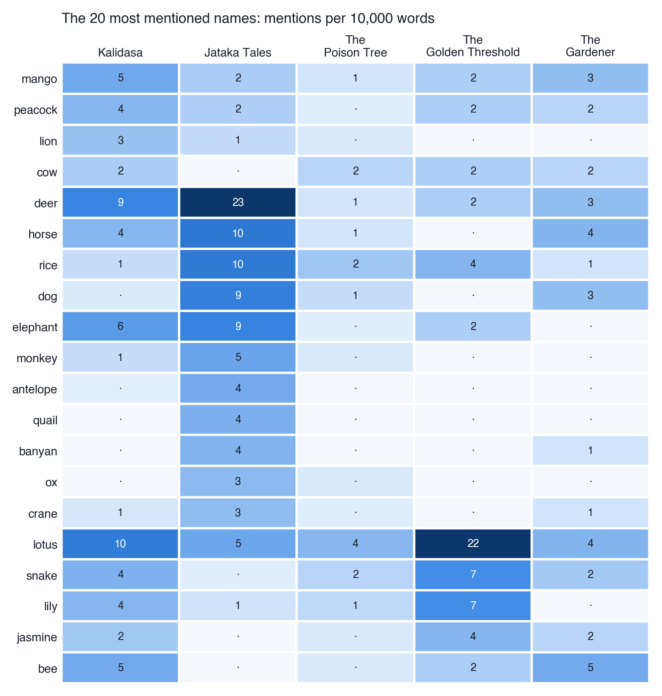
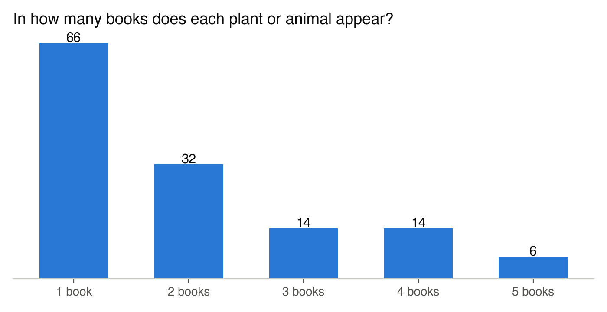
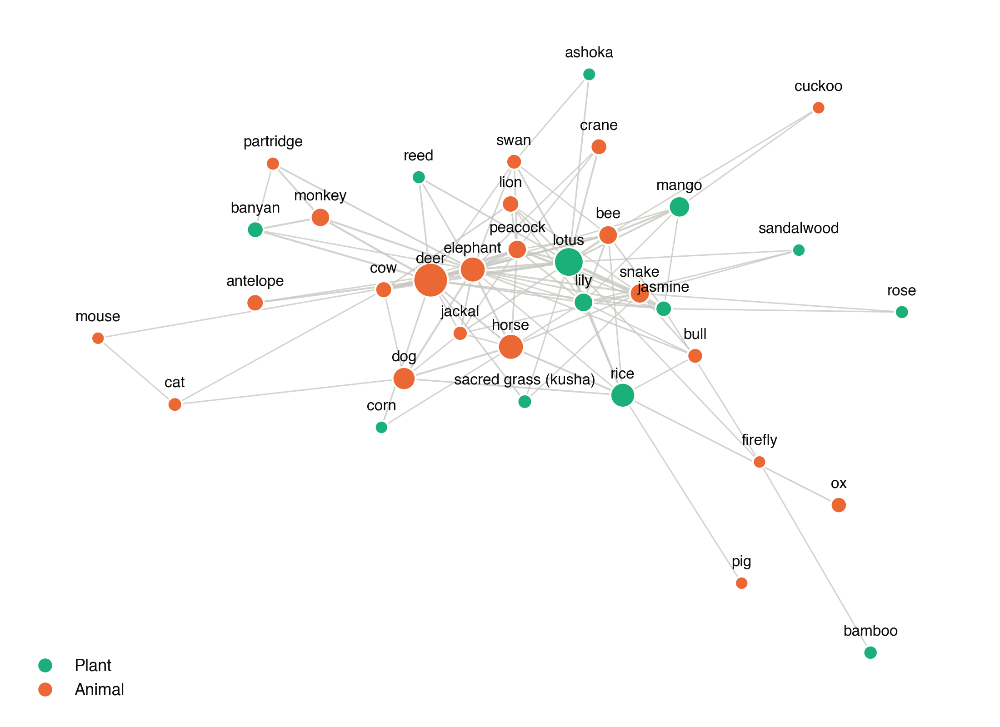
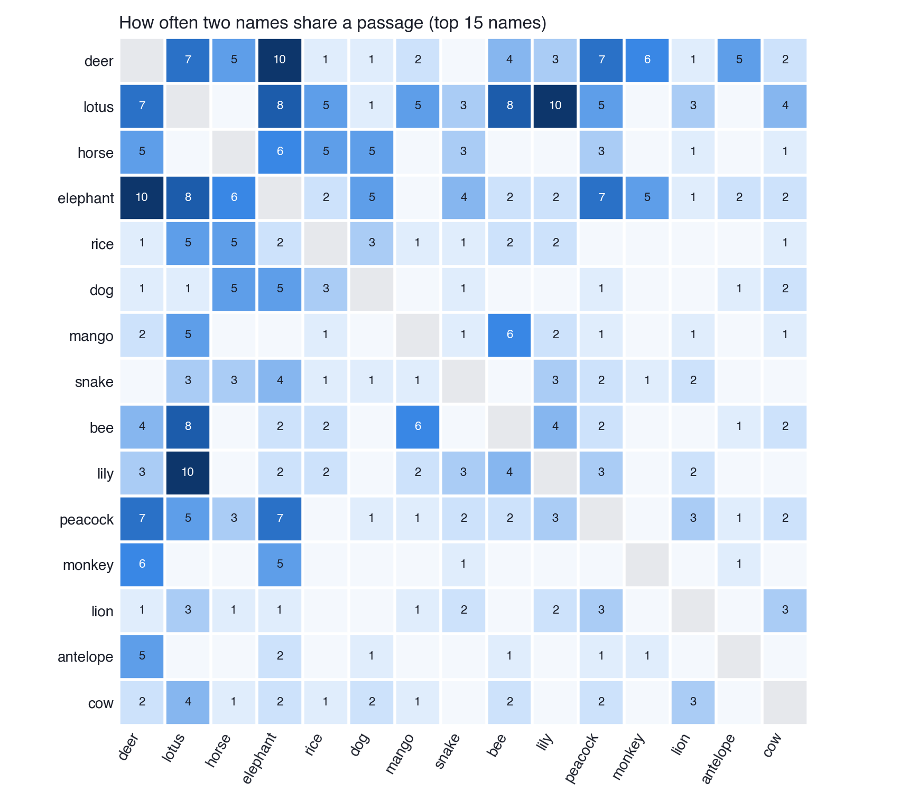

Assignment 06 · additional
Comparing the Natural Worlds of Five Books
Abstract. An additional assignment extending Assignment 02. The RAG pipeline found which plants and animals the five books name. Here I counted how often each one is mentioned in the full text of every book, and compared the books. Each genre turns out to have its own nature: the Jataka fables are mostly animals, Naidu’s poems mostly flowers, and Bankim’s novel is full of household creatures.
Plants or animals?



Which names belong to which book


Which names appear together


My interpretation
I expected the books to share one “Indian” nature. Instead each genre has its own. The Jataka fables are three-quarters animals, because the animals are the characters and the Buddha is reborn as a deer, a quail or a monkey. Naidu’s poems are two-thirds plants, and she names nature more densely than anyone else. Bankim’s novel, set in a Bengali household, has owls, sparrows, lizards and rats that no other book has.
The shared core is small: deer, lotus, mango, peacock, rice and snake. The lotus sits at the centre of the network with the lily and the bee around it. That is the lotus pond of Indian poetry, and the deer and the elephant form the forest.
Counting was harder than I thought, because a word can be several things. My first count gave Naidu six bears, all from the verb in “we bear her along”, and found the jasmine “kunda” 400 times in The Poison Tree, where Kunda is the heroine. I had to read before I could count, and each of these rules is written into the code.
Files
compare_books.py: the counts and the first chartsheatmaps.py: the three heatmapsfindings.md: the full write-upresults/summary.md: the summary table